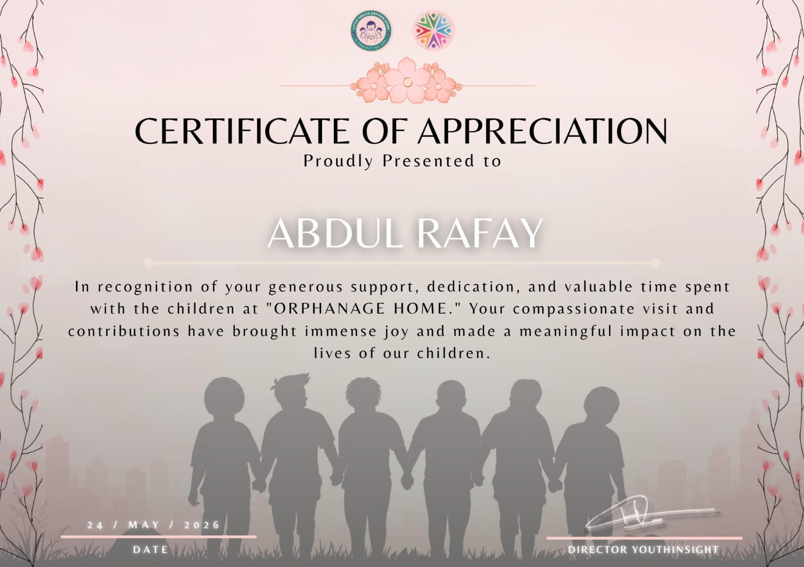

Certificate of Appreciation
YouthsInsight · Orphanage Home Project

Please place your YouthsInsight certificate here:
assets/images/certifications/youth-insight.jpg
Overview
Received a Certificate of Appreciation from YouthsInsight for generous support, dedication, and valuable time spent with the children at the "Orphanage Home." This compassionate visit and contributions brought immense joy and made a meaningful impact on the lives of the children.
What It Demonstrates
This certificate signifies a deep commitment to community upliftment and youth empowerment. Engaging directly with vulnerable populations hones essential interpersonal skills such as empathy, cross-cultural communication, and leadership, which are crucial in any team-based professional environment.
Social Work
Community Engagement
Empathy
Youth Development